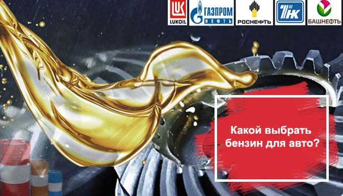

ООО "ЛУКОЙЛ-УНП" (ИНН:1102057865)

Организация ООО "ЛУКОЙЛ-УНП"
Общие сведения: Дерево связей На карте Отчетность
Полное юридическое наименование: ОБЩЕСТВО С ОГРАНИЧЕННОЙ ОТВЕТСТВЕННОСТЬЮ "ЛУКОЙЛ-Ухтанефтепереработка"
Руководитель: ГЕНЕРАЛЬНЫЙ ДИРЕКТОР Иванов Алексей Юрьевич ИНН / КПП: 1102057865 / 110201001 Уставной капитал: 40.3168 млн. руб. Численность персонала: 668 Количество учредителей: 1 Дата регистрации: 01.04.2008 Статус: Действующее Контактная информация:Индекс: 169330
Адрес: РЕСПУБЛИКА КОМИ,Г УХТА,14,УЛ ЗАВОДСКАЯ, Д 11
GPS координаты: 63.563127,53.728516
Юридический адрес: 169300, КОМИ РЕСПУБЛИКА, ГОРОД УХТА, УЛИЦА ЗАВОДСКАЯ, 11
Телефон: 8 (8216) 76-20-60 , 8 (82147) 6-20-60
Факс: 73-25-74 , 8 (82147) 3-25-74
E-mail: oaounpz@sever.ru
Сайт: http://unp.lukoil.ru
Реквизиты компании:
ИНН: 1102057865
КПП: 110201001
ОКПО: 05747198
ОГРН: 1081102000957
ОКФС: 16 - Частная собственность
ОКОГУ: 4210008 - Приватизированные предприятия
ОКОПФ: 12300 - Общества с ограниченной ответственностью
ОКТМО: 87725000001
ФСФР: 00109-D
ОКАТО: 87425000 - 87425 - Ухта, Города республиканского значения Республики Коми, Республика Коми
Предприятия рядом: УХТИНСКАЯ НЕФТЕБАЗА ООО "ЛУКОЙЛ-СЕВЕРНЕФТЕПРОДУКТ" , ООО "ТРАНСПОГРУЗКА" , ЛК ООО "УХТОЙЛ" , ООО "СТРОЙЭКСПРЕСС" - Посмотреть все на карте
Правопредшественники: Наименование ИНН ОГРН ОАО "ЛУКОЙЛ-УНП" 1102011074 1021100732036 ООО "ЛУКОЙЛ-Ухта" 1106029280 1121106001334
Виды деятельности:
Основной (по коду ОКВЭД ред.2): 19.20 - Производство нефтепродуктов
Найти похожие предприятия - в той же отрасли и регионе (с тем же ОКВЭД и ОКАТО)
Дополнительные виды деятельности по ОКВЭД:
35.12 Передача электроэнергии и технологическое присоединение к распределительным электросетям 35.30.2 Передача пара и горячей воды (тепловой энергии) 36.00.1 Забор и очистка воды для питьевых и промышленных нужд 37.00 Сбор и обработка сточных вод 43.12 Подготовка строительной площадки 46.71 Торговля оптовая твердым, жидким и газообразным топливом и подобными продуктами 46.71.2 Торговля оптовая моторным топливом, включая авиационный бензин 52.10.21 Хранение и складирование нефти и продуктов ее переработки 52.10.22 Хранение и складирование газа и продуктов его переработки 52.21.1 Деятельность вспомогательная, связанная с железнодорожным транспортом 55.90 Деятельность по предоставлению прочих мест для временного проживания 68.20.1 Аренда и управление собственным или арендованным жилым недвижимым имуществом 68.20.2 Аренда и управление собственным или арендованным нежилым недвижимым имуществом 71.12.1 Деятельность, связанная с инженерно-техническим проектированием, управлением проектами строительства, выполнением строительного контроля и авторского надзора 71.12.12 Разработка проектов промышленных процессов и производств, относящихся к электротехнике, электронной технике, горному делу, химической технологии, машиностроению, а также в области промышленного строительства, системотехники и техники безопасности 71.12.13 Разработка проектов по кондиционированию воздуха, холодильной технике, санитарной технике и мониторингу загрязнения окружающей среды, строительной акустикеУчредители: Наименование ИНН Доля Сумма ПАО "ЛУКОЙЛ" (ОКПО:00044434) . 7708004767 100% 40.3168 тыс. руб.
Является или была в прошлом учредителем следующих организаций: Дата Наименование ИНН Доля Сумма 08.02.2019 ТСЖ "ДОМ №9" 1102054092 06.06.2018 ЛК ООО "УХТОЙЛ" 1102004729 2.4 тыс. руб. 19.02.2017 ТСЖ "АЛМАЗ" 1102049536 ...показать все...
Регистрация в Пенсионном фонде Российской Федерации:
Регистрационный номер: 007007065090
Дата регистрации: 03.04.2008
Наименование органа ПФР: Государственное учреждение - Управление Пенсионного фонда Российской Федерации в городе Ухте Республики Коми
ГРН внесения в ЕГРЮЛ записи: 2081102020910
Дата внесения в ЕГРЮЛ записи: 05.06.2008
Регистрация в Фонде социального страхования Российской Федерации:Регистрационный номер: 110521397811051
Дата регистрации: 29.04.2008
Наименование органа ФСС: Филиал №5 Государственного учреждения - регионального отделения Фонда социального страхования Российской Федерации по Республике Коми
ГРН внесения в ЕГРЮЛ записи: 2161101287026
Дата внесения в ЕГРЮЛ записи: 30.09.2016
По данным rkn.gov.ru от 25.09.2020 по ИНН компания состоит в реестре операторов, осуществляющих обработку персональных данных:
Регистрационный номер: 11-0207282
Дата внесения оператора в реестр: 30.06.2011
Основание внесения оператора в реестр (номер приказа): 516
Наименование оператора: Общество с ограниченной ответственностью "ЛУКОЙЛ- Ухтанефтепереработка"
Адрес местонахождения оператора: 169330, Республика Коми, Ухтинский р-н, г. Ухта, ул. Заводская, д.11
Дата начала обработки персональных данных: 01.04.2008
Субъекты РФ, на территории которых происходит обработка персональных данных: Республика Коми
Цель обработки персональных данных: Содействия работникам и кандидатам в трудоустройстве, обучении и продвижении по службе, контроля количества и качества выполняемой работы, соблюдения норм трудового законодательства и иных актов, содержащих нормы трудового права. Обеспечения социальных льгот и гарантий, личной безопасности или иных жизненно важных интересов работников Общества и членов их семей. Заключения и исполнения гражданско-правовых договоров, в том числе договоров на оказание услуг. Соблюдения законодательства Российской Федерации об акционерных обществах, о раскрытии информации. Соблюдения антимонопольного законодательства. Соблюдения законодательства о ценных бумагах. Защиты прав и законных интересов Общества и должностных лиц в судах, органах по разрешению споров, административных органах. Формирования отчетности или подготовки предусмотренных в законодательстве заявлений, уведомлений и т.д. в Пенсионный фонд Российской Федерации, Фонд социального страхования Российской Федерации, Федеральный фонд обязательного медицинского страхования, Федеральную налоговую службу и другие государственные органы и службы. Консолидации статистических данных и показателей по Обществу. Проведения контрольных и аудиторских проверок Общества. Проведения тендерных процедур, предусмотренных локальными нормативными актами Общества. Подготовки доверенностей, выдаваемых работникам Общества, иным организациям и физическим лицам. Обеспечения пропускного и внутриобъектового режимов на объектах Общества, обеспечения сохранности имущества. Ведения корпоративных телефонных и иных информационных справочников, публикации сообщений на внутрикорпоративном портале, доске Почета и в общедоступных информационных системах персональных данных. Исполнения иных обязательств, в рамках правовых оснований.
подробнееОписание мер, предусмотренных ст. 18.1 и 19 Закона: - назначение ответственного за организацию обработки персональных данных, - назначение ответственного за обеспечение безопасности персональных данных, - создание локальных нормативных актов, регламентирующих работу с персональными данными: Политика ООО «ЛУКОЙЛ-УНП» в отношении обработки персональных данных, Положение об обработке персональных данных в ООО «ЛУКОЙЛ-УНП», - осуществление внутреннего контроля и аудита соответствия обработки персональных данных законодательству РФ, -ознакомление работников ООО «ЛУКОЙЛ-УНП», непосредственно осуществляющих обработку персональных данных, с положениями законодательства Российской Федерации о персональных данных, в том числе требованиями к защите персональных данных, документами, определяющими политику ООО «ЛУКОЙЛ-УНП» в отношении обработки персональных данных, локальными актами по вопросам обработки персональных данных, и обучение указанных работников. - обеспечение неограниченного доступа к Политике в отношении обработки персональных данных, путем размещения на корпоративном портале ООО «ЛУКОЙЛ-УНП», - использование специального программного обеспечения.
Категории персональных данных: фамилия, имя, отчество,год рождения,месяц рождения,дата рождения,место рождения,адрес,семейное положение,социальное положение,образование,профессия,доходы,состояние здоровья, паспортные данные (серия, номер, дата и место выдачи, наименование органа, выдавшего документ), гражданство, номер домашнего или иного контактного телефона, изображение (фотография) лица, сведения о предыдущих местах работы, стаж в Обществе, наименование структурного подразделения, занимаемая и совмещаемая должность, табельный номер в ИСУ «Персонал», идентификационный номер налогоплательщика, номер страхового свидетельства обязательного пенсионного страхования (регистрационный номер в системе индивидуального (персонифицированного) учета), специальность по образованию, оконченные (неоконченные) учебные заведения, ученая степень, факты повышения квалификации, результаты тестов и оценок, владение иностранными языками, наличие государственных, ведомственных наград, наград Компании и иных поощрений, данные о неснятых дисциплинарных взысканиях, номер профсоюзного билета и дата вступления/выхода в/из профсоюза, состав семьи (фамилия, имя отчество (супруга/супруги, детей), степень родства, дата рождения), информация о воинском учете, информация о наличии доступа к сведениям, составляющим государственную тайну, сведения о пребывании в отпуске, командировке, информация о банковских счетах, на которые Общество осуществляет перечисление денежных средств, размеры негосударственных пенсий, размеры взносов работника - участника негосударственной пенсионной программы, размеры социальных выплат, сведения по трудовым договорам, номер и дата открытия именного пенсионного счета в АО «НПФ «Открытие», информация о пенсионных взносах работодателя, номер и дата выдачи полиса обязательного медицинского страхования.
Категории субъектов, персональные данные которых обрабатываются: Физическим лицам, состоящим в договорных отношениях с ООО «ЛУКОЙЛ-УНП» (далее Оператор), имеющим намерение вступить в договорные отношения с Оператором, работникам Оператора, бывшим работникам Оператора, родственникам работников Оператора, гражданам, претендующим на должность у Оператора (соискателям работы), гражданам, обратившимся к Оператору с жалобами.
Перечень действий с персональными данными: сбор, запись, систематизация, накопление, хранение, уточнение, извлечение, использование, обезличивание, блокирование, удаление, уничтожение
Обработка персональных данных: смешанная,с передачей по внутренней сети юридического лица,с передачей по сети Интернет
Правовое основание обработки персональных данных: Трудовым кодексом Российской Федерации, Федеральным законом от 27.07.2006 № 152-ФЗ «О персональных данных», Федеральным законом от 15.12.2001 №167-ФЗ «Об обязательном пенсионном страховании в Российской Федерации», Федеральным законом «Об обществах с ограниченной ответственностью» от 08.02.1998 №14-ФЗ, Гражданским кодексом Российской Федерации, Законом РФ от 07.02.1992 №2300-1 «О защите прав потребителей», Уставом ООО «ЛУКОЙЛ-УНП».
Наличие трансграничной передачи: нет
Сведения о местонахождении базы данных: Россия
Результаты работы за 2019 год (по данным ФНС России): Посмотреть данные за все года Финансовые отчеты (бухгалтерские показатели): Код Показатель Значение Ед.изм. Ф1.1110 Нематериальные активы 28116 тыс. руб. Ф1.1120 Результаты исследований и разработок 1600 тыс. руб. Ф1.1130 Нематериальные поисковые активы 0 тыс. руб. Ф1.1140 Материальные поисковые активы 0 тыс. руб. Ф1.1150 Основные средства 5494990 тыс. руб. Ф1.1160 Доходные вложения в материальные ценности 9265 тыс. руб. Ф1.1170 Финансовые вложения 0 тыс. руб. Ф1.1180 Отложенные налоговые активы 23893 тыс. руб. Ф1.1190 Прочие внеоборотные активы 585998 тыс. руб. Ф1.1100 Итого по разделу I - Внеоборотные активы 6143860 тыс. руб. Ф1.1210 Запасы 2876190 тыс. руб. Ф1.1220 Налог на добавленную стоимость по приобретенным ценностям 360967 тыс. руб. Ф1.1230 Дебиторская задолженность 4922390 тыс. руб. Ф1.1240 Финансовые вложения (за исключением денежных эквивалентов) 15364200 тыс. руб. Ф1.1250 Денежные средства и денежные эквиваленты 10 тыс. руб. Ф1.1260 Прочие оборотные активы 18612 тыс. руб. Ф1.1200 Итого по разделу II - Оборотные активы 23542400 тыс. руб. Ф1.1600 БАЛАНС (актив) 29686200 тыс. руб. Ф1.1310 Уставный капитал (складочный капитал, уставный фонд, вклады товарищей) 40317 тыс. руб. Ф1.1320 Собственные акции, выкупленные у акционеров 0 тыс. руб. Ф1.1340 Переоценка внеоборотных активов 200790 тыс. руб. Ф1.1350 Добавочный капитал (без переоценки) 16 тыс. руб. Ф1.1360 Резервный капитал 10630 тыс. руб. Ф1.1370 Нераспределенная прибыль (непокрытый убыток) 23022500 тыс. руб. Ф1.1300 Итого по разделу III - Капитал и резервы 23274300 тыс. руб. Ф1.1410 Заемные средства 0 тыс. руб. Ф1.1420 Отложенные налоговые обязательства 482764 тыс. руб. Ф1.1430 Оценочные обязательства 0 тыс. руб. Ф1.1450 Прочие обязательства 0 тыс. руб. Ф1.1400 Итого по разделу IV - Долгосрочные обязательства 482764 тыс. руб. Ф1.1510 Заемные средства 0 тыс. руб. Ф1.1520 Кредиторская задолженность 5838070 тыс. руб. Ф1.1530 Доходы будущих периодов 0 тыс. руб. Ф1.1540 Оценочные обязательства 91109 тыс. руб. Ф1.1550 Прочие обязательства 0 тыс. руб. Ф1.1500 Итого по разделу V - Краткосрочные обязательства 5929180 тыс. руб. Ф1.1700 БАЛАНС (пассив) 29686200 тыс. руб. Ф2.2110 Выручка 60302200 тыс. руб. Ф2.2120 Себестоимость продаж 49433400 тыс. руб. Ф2.2100 Валовая прибыль (убыток) 10868800 тыс. руб. Ф2.2210 Коммерческие расходы 5231710 тыс. руб. Ф2.2220 Управленческие расходы 438124 тыс. руб. Ф2.2200 Прибыль (убыток) от продаж 5198960 тыс. руб. Ф2.2310 Доходы от участия в других организациях 0 тыс. руб. Ф2.2320 Проценты к получению 961205 тыс. руб. Ф2.2330 Проценты к уплате 0 тыс. руб. Ф2.2340 Прочие доходы 135619 тыс. руб. Ф2.2350 Прочие расходы 136084 тыс. руб. Ф2.2300 Прибыль (убыток) до налогообложения 6159700 тыс. руб. Ф2.2410 Текущий налог на прибыль 1248430 тыс. руб. Ф2.2421 в т.ч. постоянные налоговые обязательства (активы) 9151 тыс. руб. Ф2.2430 Изменение отложенных налоговых обязательств 28234 тыс. руб. Ф2.2450 Изменение отложенных налоговых активов -20895 тыс. руб. Ф2.2460 Прочее 23389 тыс. руб. Ф2.2400 Чистая прибыль (убыток) 4942000 тыс. руб. Ф2.2510 Результат от переоценки внеобор.активов, не включ.в чистую прибыль(убыток) периода 0 тыс. руб. Ф2.2520 Результат от прочих операций, не включаемый в чистую прибыль (убыток) периода 0 тыс. руб. Ф2.2500 Совокупный финансовый результат периода 4942000 тыс. руб. Ф3.3600 Чистые активы 23274300 тыс. руб. Посмотреть отчетность за 2009 - 2019 год.
Лицензии: Номер Дата Виды деятельности Место действия (11) - 4432-РБ 22.09.2017 Деятельность по сбору, транспортированию, обработке, утилизации, обезвреживанию, размещению отходов I - IV классов опасности 011-00094 29.06.2016 Деятельность по сбору, транспортированию, обработке, утилизации, обезвреживанию, размещению отходов I - IV классов опасности 011№00001 ВЫДАЧА 20.05.2013 Деятельность по сбору, транспортированию, обработке, утилизации, обезвреживанию, размещению отходов I - IV классов опасности Показать все... Госзакупки: Арбитраж: Сертификаты соответствия: Исполнительные производства:
Краткая справка:
Организация 'ОБЩЕСТВО С ОГРАНИЧЕННОЙ ОТВЕТСТВЕННОСТЬЮ "ЛУКОЙЛ-Ухтанефтепереработка"' зарегистрирована 01 апреля 2008 года по адресу 169300, КОМИ РЕСПУБЛИКА, ГОРОД УХТА, УЛИЦА ЗАВОДСКАЯ, 11. Компании был присвоен ОГРН 1081102000957 и выдан ИНН 1102057865. Основным видом деятельности является производство нефтепродуктов. Компанию возглавляет ИВАНОВ АЛЕКСЕЙ ЮРЬЕВИЧ. За 2019 год прибыль компании составила 4942 млн.руб.
Добавить организацию в сравнение Поиск по ИНН Поиск по ОГРН Поиск по ОКПО Поиск по телефону Поиск по наименованию Поиск по руководителю Поиск по адресу Поиск предпринимателейСписок по регионам (ОКАТО) Список по отраслям (ОКВЭД) Список предпринимателей © OpenStreetMap
История изменений данных в карточке. Для внесения изменений в данную страницу необходимо отправить запрос
Основные данные о компании получены из Федеральной налоговой службы (ЕГРЮЛ)
Страница не является официальным сайтом компании. Информация носит ознакомительный характер, собрана из открытых источников, и может быть неточной и устаревшей. При копировании материалов гиперссылка на www.list-org.com обязательна. Мы используем метаданные пользователя (cookie, данные об ip-адресе) для функционирования сайта. Если вы не хотите, чтобы эти ваши данные обрабатывались, то вам следует покинуть сайт.